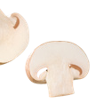

Con el fin de crear un menú con sus ingredientes bien detallados, es preciso que dominéis aspectos como las características de los distintos reinos y la clasificación interna de estos.
Estas unidades didácticas desgranarán los saberes básicos que necesitáis. Prestad especial atención a las actividades propuestas en relación con las diferencias entre los reinos y los grupos taxonómicos, las partes de las plantas y la distinción entre plantas con o sin flores, semillas y frutos.
LOS REINOS MONERAS, PROTOCTISTAS Y HONGOS
EL REINO PLANTAS
Consultad estas fuentes de información, que os serán útiles para complementar la información de las unidades didácticas:
El catálogo de setas y hongos de la web Fungipedia.
El artículo web Las 11 raíces comestibles más comunes usadas en cocina, de Lifeder Educación.
El vídeo Bacterias, levaduras y aumentos: alimentos con microorganismos, de UBLInvestigación.
Investigad distintas gastronomías y seleccionad tres platos que estén elaborados principalmente sin alimentos de origen animal.
Clasificad los ingredientes de los platos en sus reinos, indicando sus características de grupo.
Recoged toda la información que habéis recopilado en un documento digital.
Plato de risotto gourmetChampiñón en rodajasChampiñones en rodajasChampiñones en rodajas

Champiñones en rodajasChampiñones en rodajas